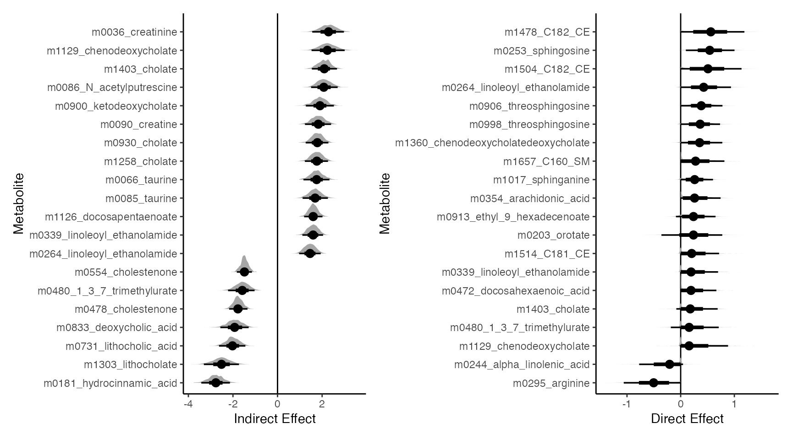

Joint microbiome-metabolome experiments can give a view into how
microbes shape their environments. multimedia lets us
analyze high-dimensional outcome and mediation variables simultaneously.
This allows us to analyze treatment
microbiome
metabolome and treatment
metabolome
microbiome paths. The methodology only allows us to analyze one kind of
path at a time; in any case, it’s impossible to completely disambiguate
the directionality of the association from a single timepoint without
prior knowledge. That said, the relationships that are uncovered from
either of these directions can already suggest novel microbe-metabolite
relationships.
library(brms)
library(compositions)
library(ggdist)
library(glue)
library(patchwork)
library(tidyverse)
library(vroom)
library(multimedia)
set.seed(20231222)Data Processing
We’ll load data from the Borenstein Lab’s microbiome-metabolome curated data repository. This is a great resource that consistently documents each study and ensures uniform data processing. Our data is from Franzosa et al.’s study of intestinal bowel disease. We’ll treat disease status as the treatment, the microbiome as mediators, and metabolites as the outcome, in the spirit of that study’s discussion:
Together, these findings suggest that yet-to-be characterized molecules in the gut metabolome, linked to inflammation and ultimately IBD, may be largely microbially derived or modified.
Sys.setenv("VROOM_CONNECTION_SIZE" = 5e6)
taxa <- read_tsv("https://go.wisc.edu/l015v0")[, -1]
metabolites <- read_tsv("https://go.wisc.edu/0t3gs3")[, -1]
metadata <- read_tsv("https://go.wisc.edu/9z36wr")We’ll filter quite aggressively so that the examples in this vignette
run quickly. We then compile everything into a
mediation_data object that organizes the treatment,
mediators, and outcomes. We apply a centered log transform to the
microbiome relative abundance and a log transform to the metabolite
expression levels. Note that I’ve hidden some of the preprocessing
functions (e.g., simplify_tax_names); these do what you
expect, and you can read them in the .Rmd source.
taxa <- clr(taxa) |>
filter_mean() |>
simplify_tax_names()
metabolites <- log(1 + metabolites) |>
filter_mean(threshold = 6) |>
select(matches(annotated_metabolites(metabolites))) |>
simplify_metab_names()
combined <- metabolites |>
bind_cols(taxa, metadata) |>
as_tibble()
exper <- mediation_data(
combined,
colnames(metabolites),
"Study.Group",
colnames(taxa)
)
exper#> [Mediation Data]
#> 220 samples with measurements for,
#> 1 treatment: Study.Group
#> 173 mediators: gSutterella, gMarvinbryantia, ...
#> 155 outcomes: m0031_phenyllactate, m0045_azelate, ...Lasso Approach
We will fit sparse regression models for each outcome so that, for any metabolite, only a subset of microbes is expected to influence its abundance.
model <- multimedia(exper, glmnet_model(lambda = 0.1)) |>
estimate(exper)We can have different direct effects depending on the treatment assignments of the mediators. Here we’ll average over all mediator settings and plot the features with the largest direct effects. Note that the boxplots can reflect indirect effects as well, and this is why the ordering below (based on direct effect estimate) doesn’t exactly correspond to the distance between the boxplots.
direct <- list(
CD = direct_effect(model, exper, 1, 3),
UC = direct_effect(model, exper, 2, 3)
) |>
map_dfr(effect_summary, .id = "treatment")
vis_direct <- direct |>
slice_max(abs(direct_effect), n = 20) |>
pull(outcome)
combined |>
select(any_of(vis_direct), Study.Group) |>
pivot_longer(-Study.Group, names_to = "feature") |>
ggplot() +
geom_boxplot(
aes(value, reorder(feature, value, median),
fill = Study.Group
)
) +
labs(
x = "log(1 + intensity)",
y = "Metabolite",
fill = "Group"
)
The block below calculates the analogous overall indirect effects.
We’re particularly interested in the difference between metabolites that
have strong indirect vs. direct effects, because these are expected to
have different relationships with the microbiome. To simplify this
comparison, we combine the top direct and indirect effects in the object
top_effects.
indirect_effect <- list(
CD = indirect_overall(model, exper, 1, 3),
UC = indirect_overall(model, exper, 2, 3)
)
top_direct <- dplyr::rename(direct, effect = direct_effect)
top_indirect <- dplyr::rename(bind_rows(indirect_effect),
effect = indirect_effect
)
top_effects <- list(direct = top_direct, indirect = top_indirect) |>
bind_rows(.id = "type")
vis_outcomes <- c(
"m0181_hydrocinnamic_acid", "m1303_lithocholate",
"m0036_creatinine", "m0253_sphingosine", "m1478_C182_CE",
"m0295_arginine"
)
top_effects <- bind_rows(
filter(top_effects, outcome %in% vis_outcomes[1:3], type == "indirect"),
filter(top_effects, outcome %in% vis_outcomes[4:6], type == "direct"),
)The plot below is an MDS of microbiome compositions where point sizes represent metabolite abundances. Notice that the for indirect effects, there is a clear relationship between metabolites and microbiome composition. This is consistent with what we expect from a mediation analysis: Indirect effects have to travel through the mediators, which in this case are microbiome compositions.
eig <- \(x, k) 100 * round(x[k] / sum(x), 4)
mds <- cmdscale(dist(mediators(exper)), eig = TRUE, k = 2)
coords <- data.frame(mds$points) |>
bind_cols(treatments(exper)) |>
bind_cols(outcomes(exper)[, vis_outcomes]) |>
pivot_longer(top_effects$outcome,
names_to = "outcome",
values_to = "abundance"
) |>
left_join(top_effects) |>
group_by(outcome) |>
mutate(abundance_quantile = as.integer(as.factor(cut(abundance, 10))) / 10)
ggplot(coords) +
geom_point(aes(X1, X2, col = Study.Group, size = abundance_quantile)) +
scale_size_area(max_size = 1.5, breaks = c(0.25, 0.5, 0.75)) +
labs(
x = glue("MDS1 [{eig(mds$eig, 1)}%]"),
y = glue("MDS2 [{eig(mds$eig, 2)}%]"),
size = "Metabolite Abundance Quantile",
col = "Group"
) +
facet_wrap(~ type + reorder(outcome, -abundance))
Pathwise indirect effects are those that appear when modifying the treatment status for a single mediator. Unlike overall indirect effects, they give us effects for individual mediator-outcome pairs. Now, instead of averaging over mediator treatment assignments, we average over direct edge treatment assignments. The block below is time-consuming, so if you are following along, you can just read in the pre-computed result in the next block.
# indirect_sorted <- list(
# CD = indirect_pathwise(model, exper, 1, 3),
# UC = indirect_pathwise(model, exper, 2, 3)
# ) |>
# map_dfr(effect_summary, .id = "treatment")
indirect_sorted <- read_csv("https://go.wisc.edu/n04p94")We can look at the effects which have the strongest indirect effects. These make sense. For example, genus Biophila seems to have a negative relationship with Taurine. Maybe that metabolite is produced by a competitor? Or maybe the microbe eats the metabolite. In any case, IBD seems to decrease the abundance of Biophila, which consequently increases the abundance of the metabolite.
p <- indirect_sorted %>%
split(.$treatment) |>
map(~ arrange(., -indirect_effect) |>
plot_mediators(exper, treatment = "Study.Group", nrow = 2))
p[["CD"]]
We can create models where the effects have been deliberately removed, which can be used for synthetic null testing. Here are simulated samples from a “nullified” model without direct effects, a full model with direct effects, and the original samples. To the extent that the altered and fitted models differ, the direct treatment edge is needed to improve model fit.
altered <- model |>
nullify("T->Y") |>
estimate(exper)
# sample at original treatment assignments
profile <- setup_profile(model, treatments(exper), treatments(exper))
samples <- list(
real = outcomes(exper),
fitted = outcomes(sample(model, profile = profile)),
altered = outcomes(sample(altered, profile = profile))
) |>
bind_rows(.id = "source") |>
bind_cols(treatment = rep(treatments(exper)$Study.Group, 3)) |>
pivot_longer(direct$outcome) |>
mutate(name = factor(name, levels = unique(direct$outcome)))
# visualize
ggplot(filter(samples, samples$name %in% unique(samples$name)[1:20])) +
geom_boxplot(aes(value, name, fill = treatment)) +
facet_wrap(~source)How can we understand the uncertainty of the estimated models? One approach is to form the bootstrap distribution of the effects that we care about. It’s a little problematic to form bootstrap confidence intervals for sparse regression. We can still interpret the full bootstrap distributions, though. Effects that have large nonzero components have more evidence of being real. This block is again slow, so you can skip ahead and load a pre-computed version.
fs <- list(direct = direct_effect, indirect = indirect_overall)
# inference <- bootstrap(model, exper, fs, B = 1000)
inference <- readRDS(url("https://go.wisc.edu/33ty1f"))
filter_outcomes <- inference$indirect |>
effect_summary() |>
group_by(outcome) |>
summarise(indirect_effect = median(indirect_effect)) |>
slice_max(abs(indirect_effect), n = 20) |>
pull(outcome)
p1 <- filter(inference$indirect, outcome %in% filter_outcomes) |>
ggplot() +
geom_vline(xintercept = 0) +
stat_slabinterval(
aes(indirect_effect, reorder(outcome, indirect_effect, median)),
.width = c(.66, .95)
) +
labs(x = "Indirect Effect", y = "Metabolite")
filter_outcomes <- inference$direct |>
group_by(outcome) |>
summarise(direct_effect = median(direct_effect)) |>
slice_max(abs(direct_effect), n = 20) |>
pull(outcome)
p2 <- filter(inference$direct, outcome %in% filter_outcomes) |>
ggplot() +
geom_vline(xintercept = 0) +
stat_slabinterval(
aes(direct_effect, reorder(outcome, direct_effect, median)),
.width = c(.66, .95)
) +
labs(x = "Direct Effect", y = "Metabolite")
p1 | p2
Hurdle-Lognormal Approach
There are many zeros in the metabolites data, and sparse regression is not the best approach for modeling these kinds of outcomes. Indeed, we seem to have been most sensitive to indirect effects for highly abundant metabolites (which are present in most samples), and this raises the question of whether we might have missed true indirect effects where that model’s linearity assumptions were not appropriate.
As an alternative, we can work with a hurdle model, which explicitly models zeros together with a nonnegative component. For this, we’ll return the outcomes to their original (unlogged) scaling. We’ll apply a BRMS hurdle model. So that this isn’t too slow during the indirect effect estimation, I’ve further reduced the number of taxa and metabolites in this analysis.
exper2 <- exper
outcomes(exper2) <- exp(outcomes(exper2)[, 1:50]) - 1
mediators(exper2) <- mediators(exper2)[, 1:50]
# model <- multimedia(
# exper2,
# brms_model(family = hurdle_lognormal())
# ) |>
# estimate(exper2)
model <- readRDS(url("https://go.wisc.edu/5e26op"))With the updated model, we can again compute pathwise indirect effects. This time, we are more sensitive to metabolites that completely vanish in the IBD (treatment) group. In all of the selected pairs, there is also a treatment effect on microbe abundance. If this hadn’t been present, and if the metabolite simply vanished, then that would be a direct effect.
# indirect_sorted <- indirect_pathwise(model, exper2) |>
indirect_sorted <- read_csv("https://go.wisc.edu/j3z503") |>
effect_summary()
plot_mediators(indirect_sorted, exper2, treatment = "Study.Group")
We can see how well the hurdle model captured the zero pattern by simulating data from the fitted model. There are a few outliers, which is why I’ve trimmed the -axis. The model has not captured the specific shape of the treatment group scatterplots above, which tends to have regions with only zeros for some metabolites. In retrospect, this is natural. The hurdle model can only increase the zero probability as a linear function of species abundance. We would need a step function preidctor to support the kinds of transitions we see above.
profile <- setup_profile(model, treatments(exper), treatments(exper))
samples <- sample(model, profile = profile, pretreatment = pretreatments(exper))
colnames(outcomes(samples)) <- colnames(outcomes(exper2))
plot_mediators(indirect_sorted, samples, treatment = "Study.Group")Finally, we can look at direct effects from this model, which can be compared to the analogous figure for the sparse regression. Now, many outcomes with exact zeros under treatment have been detected, which is consistent with the the hurdle model’s effectiveness in accurately reflecting features that influence zero-inflation.
# direct <- direct_effect(model, exper) |>
direct <- read_csv("https://go.wisc.edu/3ik252") |>
effect_summary()
combined |>
select(any_of(direct$outcome), Study.Group) |>
pivot_longer(-Study.Group, names_to = "feature") |>
mutate(feature = factor(feature, levels = unique(direct$outcome))) |>
ggplot() +
geom_boxplot(aes(value, feature, fill = Study.Group))
#> R version 4.4.1 (2024-06-14)
#> Platform: aarch64-apple-darwin20
#> Running under: macOS Sonoma 14.5
#>
#> Matrix products: default
#> BLAS: /Library/Frameworks/R.framework/Versions/4.4-arm64/Resources/lib/libRblas.0.dylib
#> LAPACK: /Library/Frameworks/R.framework/Versions/4.4-arm64/Resources/lib/libRlapack.dylib; LAPACK version 3.12.0
#>
#> locale:
#> [1] en_US.UTF-8/en_US.UTF-8/en_US.UTF-8/C/en_US.UTF-8/en_US.UTF-8
#>
#> time zone: America/Chicago
#> tzcode source: internal
#>
#> attached base packages:
#> [1] stats4 stats graphics grDevices utils datasets methods
#> [8] base
#>
#> other attached packages:
#> [1] multimedia_0.1.0 tidyselect_1.2.1
#> [3] SummarizedExperiment_1.35.1 Biobase_2.65.0
#> [5] GenomicRanges_1.57.1 GenomeInfoDb_1.41.1
#> [7] IRanges_2.39.2 S4Vectors_0.43.2
#> [9] BiocGenerics_0.51.0 MatrixGenerics_1.17.0
#> [11] matrixStats_1.3.0 vroom_1.6.5
#> [13] lubridate_1.9.3 forcats_1.0.0
#> [15] stringr_1.5.1 dplyr_1.1.4
#> [17] purrr_1.0.2 readr_2.1.5
#> [19] tidyr_1.3.1 tibble_3.2.1
#> [21] tidyverse_2.0.0 patchwork_1.2.0
#> [23] glue_1.7.0 ggdist_3.3.2
#> [25] compositions_2.0-8 brms_2.21.0
#> [27] Rcpp_1.0.13 ggplot2_3.5.1
#> [29] BiocStyle_2.33.1
#>
#> loaded via a namespace (and not attached):
#> [1] shape_1.4.6.1 tensorA_0.36.2.1 jsonlite_1.8.8
#> [4] magrittr_2.0.3 TH.data_1.1-2 estimability_1.5.1
#> [7] farver_2.1.2 rmarkdown_2.28 fs_1.6.4
#> [10] zlibbioc_1.51.1 ragg_1.3.2 vctrs_0.6.5
#> [13] multtest_2.61.0 htmltools_0.5.8.1 S4Arrays_1.5.7
#> [16] progress_1.2.3 distributional_0.4.0 curl_5.2.1
#> [19] Rhdf5lib_1.27.0 SparseArray_1.5.31 rhdf5_2.49.0
#> [22] sass_0.4.9 StanHeaders_2.32.10 bslib_0.8.0
#> [25] htmlwidgets_1.6.4 desc_1.4.3 plyr_1.8.9
#> [28] sandwich_3.1-0 zoo_1.8-12 emmeans_1.10.4
#> [31] cachem_1.1.0 igraph_2.0.3 lifecycle_1.0.4
#> [34] iterators_1.0.14 pkgconfig_2.0.3 Matrix_1.7-0
#> [37] R6_2.5.1 fastmap_1.2.0 glmnetUtils_1.1.9
#> [40] GenomeInfoDbData_1.2.12 digest_0.6.37 colorspace_2.1-1
#> [43] textshaping_0.4.0 vegan_2.6-8 labeling_0.4.3
#> [46] timechange_0.3.0 fansi_1.0.6 httr_1.4.7
#> [49] abind_1.4-5 mgcv_1.9-1 compiler_4.4.1
#> [52] bit64_4.0.5 withr_3.0.1 backports_1.5.0
#> [55] inline_0.3.19 highr_0.11 QuickJSR_1.3.1
#> [58] pkgbuild_1.4.4 bayesm_3.1-6 MASS_7.3-61
#> [61] DelayedArray_0.31.11 biomformat_1.33.0 loo_2.8.0
#> [64] permute_0.9-7 tools_4.4.1 ape_5.8
#> [67] nlme_3.1-166 rhdf5filters_1.17.0 grid_4.4.1
#> [70] checkmate_2.3.2 cluster_2.1.6 reshape2_1.4.4
#> [73] ade4_1.7-22 generics_0.1.3 operator.tools_1.6.3
#> [76] gtable_0.3.5 tzdb_0.4.0 formula.tools_1.7.1
#> [79] data.table_1.16.0 hms_1.1.3 tidygraph_1.3.1
#> [82] utf8_1.2.4 XVector_0.45.0 foreach_1.5.2
#> [85] pillar_1.9.0 posterior_1.6.0 robustbase_0.99-4
#> [88] splines_4.4.1 lattice_0.22-6 bit_4.0.5
#> [91] survival_3.7-0 Biostrings_2.73.1 knitr_1.48
#> [94] gridExtra_2.3 V8_5.0.0 bookdown_0.40
#> [97] phyloseq_1.49.0 xfun_0.47 bridgesampling_1.1-2
#> [100] DEoptimR_1.1-3 rstan_2.32.6 stringi_1.8.4
#> [103] UCSC.utils_1.1.0 yaml_2.3.10 evaluate_0.24.0
#> [106] codetools_0.2-20 BiocManager_1.30.24 cli_3.6.3
#> [109] RcppParallel_5.1.9 xtable_1.8-4 systemfonts_1.1.0
#> [112] munsell_0.5.1 jquerylib_0.1.4 coda_0.19-4.1
#> [115] parallel_4.4.1 rstantools_2.4.0 pkgdown_2.1.0
#> [118] prettyunits_1.2.0 bayesplot_1.11.1 Brobdingnag_1.2-9
#> [121] glmnet_4.1-8 mvtnorm_1.2-6 scales_1.3.0
#> [124] insight_0.20.3 crayon_1.5.3 rlang_1.1.4
#> [127] multcomp_1.4-26